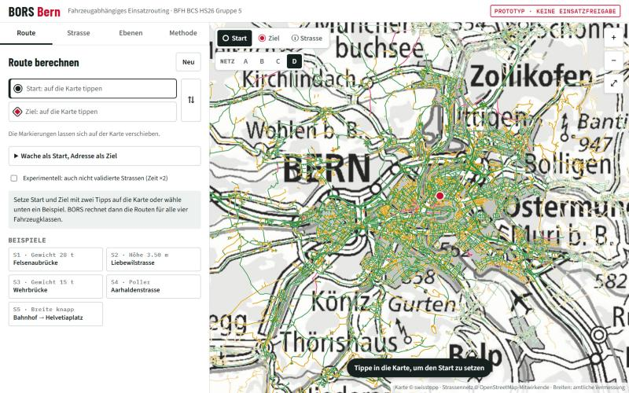
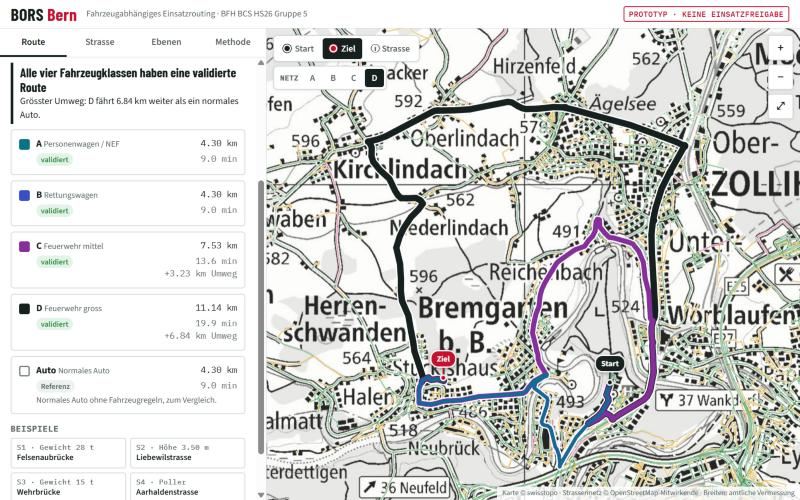
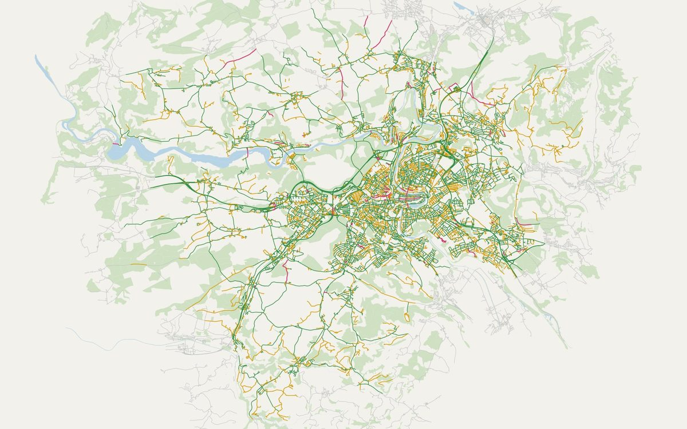

Ich studiere Digital Business & AI an der BFH, davor war ich mehrere Jahre in der Bank und
habe Physik studiert. Ich baue aus echten Daten Werkzeuge, die man benutzen kann – hier zeige
ich, was sie tun und wie sie funktionieren.
Ich liebe Daten, Mathematik und komplexe Probleme, vor allem dann,
wenn die Lösung Menschen und der Natur etwas Gutes tut.
Wie ich hier gelandet bin
Angefangen hat alles mit einem Onlinespiel. Als ich etwa zehn oder zwölf war, habe ich dort
gehandelt: Preise beobachtet, gerechnet und versucht, möglichst gute Geschäfte zu machen.
Viel Geld oder Zeit hatte ich nicht, also musste ich mir genau überlegen, wann sich etwas lohnt.
Das hat mich irgendwie mehr fasziniert als das eigentliche Spiel.
Weil mir das Rechnen und der Umgang mit Zahlen gefielen, entschied ich mich später für eine
Banklehre. Dort merkte ich allerdings, dass der Alltag viel stärker von der Kundenberatung
geprägt war, als ich erwartet hatte. Also machte ich die Passerelle und begann ein
Physikstudium. Die Mathematik gefiel mir, aber mir fehlte die praktische Anwendung.
Heute studiere ich Digital Business & AI an der Berner Fachhochschule, mit Schwerpunkt
Datenanalyse. Hier kann ich das verbinden, was mich schon damals interessiert hat: mit Zahlen
arbeiten, Zusammenhänge erkennen und daraus etwas machen, das auch ausserhalb des Bildschirms
einen Nutzen hat.
Ausgleich finde ich im Ausdauersport: Ich trainiere für Triathlon bis zur
Ironman-Distanz, am liebsten draussen in der Natur.
Werdegang
Ausbildung
Arbeit
Nebenjob
geplant
heute
2016–2019Kaufmann EFZ Bank mit Berufsmaturität, Raiffeisen
2019–2020Kundenberater und Assistenz Bankleitung, Raiffeisen
2020–2021Passerelle, Kollegium St. Michael
2020–2024Verkauf und Bistro, TopShop (neben Passerelle und Studium)
2021–2023Physikstudium an der Universität Bern, 3 Semester, Minor Astronomie
2024–2026Privatkundenberater, Bank Cler Bern (SAQ-zertifiziert 2025)
seit 2024BSc Digital Business & AI, Berner Fachhochschule
Projekte

Hauptprojekt · Teamprojekt BFH, 6 Personen
GreenRoute
Einsatzrouting für Blaulichtfahrzeuge: Welche Strasse ist für welches Fahrzeug physisch
passierbar? GreenRoute prüft für Notarzt, Rettungswagen und zwei Feuerwehrfahrzeuge, ob Breite,
Höhe und Gewicht reichen, und berechnet darauf die Route, in Bern und zehn Nachbargemeinden.
Mein Teil: Product Owner und die
gesamte technische Umsetzung, von der Datenaufbereitung und Breitenmessung über den Router
bis zur Web-App. Fachfragen klärt das Team mit Schutz und Rettung Bern, dem Tiefbauamt der
Stadt Bern und dem ASTRA.
Python
QGIS
SQLite
JavaScript
Geodaten

Beispiel Felsenaubrücke: Notarzt und Rettungswagen
fahren direkt, die grosse Feuerwehr braucht 6,8 km Umweg (Stand 29.10.2026).

Das ganze Netz für die grosse Feuerwehr:
grün validiert, gelb unvalidiert, rot gesperrt.
Die Frage
Eine gewöhnliche Navigation rechnet mit Autos, nicht mit einem drei
Meter breiten Feuerwehrfahrzeug. Welche Strassen passen also für welches Fahrzeug?
Was es schwierig macht
Die befahrbare Breite einer Strasse steht in keiner Datenquelle direkt.
Parkfelder, Mauern und Pfeiler verengen sie, und jede Messung hat eine Toleranz.
Höhenangaben aus OpenStreetMap sind nicht vor Ort bestätigt.
Wie GreenRoute es löst
Ich messe die Breite aus der amtlichen Vermessung mit Querprofilen
und ziehe pro Strassenrand eine Messtoleranz ab. Jede Strasse erhält pro Fahrzeug
einen von drei Zuständen: validiert, unvalidiert oder gesperrt. Geroutet wird
zuerst nur über validierte Strassen.
Eine Entscheidung dabei: lieber eine Strasse als
«unvalidiert» markieren als falsche Sicherheit versprechen. Gibt es keinen validierten
Weg, zeigt GreenRoute eine Ausweichroute, kennzeichnet sie und rechnet unsichere Abschnitte
mit doppelter Zeit.
Was geprüft ist und was nicht
Geprüft: Die Gewichtsgrenzen und die Regel «ohne
Signal mindestens 4 m Höhe» hat das Tiefbauamt der Stadt Bern im November 2026 bestätigt.
Die Web-App ist eine Übertragung des QGIS-Routers; beim Abgleich der Version V9.2c waren
325 von 325 Testrouten identisch.
Nicht geprüft: GreenRoute wurde nicht im Einsatz und nicht
systematisch vor Ort getestet. Es ist ein Prototyp ohne Einsatzfreigabe.
Wie es weitergehen könnte
GreenRoute kann Engstellen für grosse Fahrzeuge vorab sichtbar machen.
Ob es im Einsatz Zeit spart, ist offen. Der nächste Schritt wäre, kritische Stellen
vor Ort zu überprüfen.
Schuldner und Gläubiger der Reihe nach ausgleichen, bis alle Salden
null sind. So braucht es höchstens eine Zahlung weniger, als es Personen gibt.
Grenzen und nächster Schritt
Die Berechnung verteilt heute alle Ausgaben gleichmässig auf die Personen, die selbst
etwas bezahlt haben, und noch nicht pro Gruppe. Als Nächstes müsste sie pro Gruppe
rechnen und berücksichtigen, für wen eine Ausgabe war.
Regressionsmodelle für 100 US-Regionen: Wie hängen Raucheranteil und Einkommen mit der
Lebenserwartung zusammen (Frauen im untersten Einkommensquartil, ab 40 Jahren)?
Reproduzierbar in R.
Mein Teil: der gesamte Analyseteil.
R
Regression
Interaktionseffekte
Ergebnis
Ein um 10 Prozentpunkte höherer Raucheranteil geht mit einer um rund 1,25 Jahre tieferen
Lebenserwartung einher. In Regionen mit überdurchschnittlichem Einkommen ist der
Zusammenhang etwa doppelt so steil (−1,7 statt −0,9 Jahre, Interaktion p = 0,005).
Das Modell erklärt 46 % der Streuung (R² = 0,46); geprüft habe ich es mit einer
Residuendiagnostik.
Weil es Beobachtungsdaten sind, zeigt die Analyse einen Zusammenhang, keinen
ursächlichen Effekt.
Videoprojekt im Team (5 Personen) an der BFH Entrepreneurship
Week. Die Jury zeichnete es für Originalität und produktiven Einsatz von Technologie aus.
Mein Teil: der ganze
Videoschnitt und die Nachbearbeitung in LumaFusion, teilweise auch die Aufnahmen.